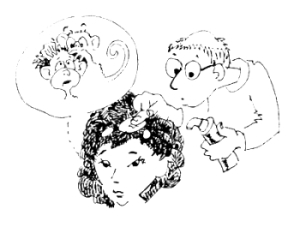

This page has usage examples for the following words:
alopecia areata 円形脱毛症 えんけいだつもうしょう
baldness はげ
dermatology 皮膚科 ひふか
dermatologist 皮膚科医 ひふかい
gray hair, white hair 白髪 しらが
hair loss 抜け毛 ぬけげ
premature baldness 若はげ わかはげ
prematurely gray hair 若白髪 わかしらが

My hair has been thinning since my late twenties.
２０代後半から、だんだん髪の毛が薄くなってきました。
２０だいこうはんから、だんだん かみのけがうすくなってきました。
Is there anything that can be done to delay the process?
何とか少しでも進行をおさえたいのですが・・・
なんとかすこしでも しんこうをおさえたいのですが・・・
My father was also prematurely bald. Is it hereditary?
父も早くからはげていました。やはり、体質的に遺伝したのでしょうか。
ちちも はやくからはげていました。やはり、たいしつてきにいでんしたのでしょうか。
I developed alopecia areata after severe psychological trauma.
あることで精神的に強いショックを受けて、１０円はげができてしまいました。
あることでせいしんてきにつよいショックをうけて１０えんはげができてしまいました。
I have a lot of white hair from the medication I am taking.
ある病気のために服用した薬の副作用で、白髪がどっと出てきました。
あるびょうきのために ふくようしたくすりの ふくさようで、しらがが どっと でてきました。
Can it be treated without taking drugs?
できるだけ薬を服用せずに治したいのですが。
できるだけ くすりをふくようせずに なおしたいのですが。
It may be because of a hormonal imbalance.
ホルモンのバランスが崩れています。
ホルモンのバランスがくずれています。
A conversation between a patient and a doctor about baldness
Patient:
A friend of mine is grieved saying that although he is in his mid-thirties, his forehead is balding and hair all over the head is thinning. My husband’s hair turned white in his forties. Is there any relationship between baldness or grey hair and hereditary or stress?
友人が、３０代半ばだというのに額の髪の毛がはげ上がり、全体的に薄くなってきたと言っては嘆いています。また、夫は４０代で、すでに髪の毛が真っ白になりました。遺伝やストレスなどに因果関係があるのでしょうか？
Doctor:
Hair (scientific name: thrix) belongs to the same embryological classification as skin and nails, and consists primarily of protein and various minerals. Although these elements and vitamins are essential for the growth of hair, supplementing these components does not increase hair. Baldness means that the production of hair in the hair follicle has ceased. Aging, evolution and male hormone affect closely to cause this cessation of growth. Aging of hair follicles begins at the end of the -teen years, in some people, and in the sixties in others. It is said that as humans evolved, hair was not needed for protection. Thus, humans lost hair, including thrix. Baldness does not occur without male hormone. Females (particularly in old age) also lose hair due to the effect of male hormone. However, premature baldness generally refers to that in males (male pattern baldness). While the cause of alopecia areata remains unclear, as it occurs under severe stress, the association of blood flow and immunity are thought to play a role. Alopecia areata is cured naturally, but steroids are said to be effective. When hair loses pigment (melanin), white hair appears, and the factor of hereditary plays a strong role. Hair loss also occurs in various diseases. You should consult a dermatologist.
毛髪は発生学上、皮膚や爪と同じ分類に属します。主として蛋白から成り立ち、その他各種のミネラルが含まれています。ビタミンも毛髪の成育に不可欠です。しかし、これらの成分を補給しても、毛髪が増加するというものではありません。はげる (baldness) という事は、毛嚢での毛髪の製造が止まった結果なのですが、これには老化、進化、それに男性ホルモンが深く関係しています。毛嚢の老化は、早い人で１０歳の終わりに始まり、遅い人では６０歳になってからと、かなり幅があります。人間が進化するにつれて、身体を保護する毛髪が必要でなくなり、頭の毛も失うようになったとされています。男性ホルモンなしに、はげは起こりません。しかし、女性も男性ホルモンの影響を受けて（特に高齢者）はげますが、 若はげといえば、男性のそれを指します。（male pattern baldness)。円形脱毛症の原因は、はっきり分かっていませんが、強いストレスを受けた時にも起こることから、血流の変化や免疫の関連も考えられています。自然に治りますが、ステロイドが有効とされています。白髪は、毛髪の色素（melanin) が失われた状態です。これも遺伝が強く関係しています。上に述べた他に各種の疾患の為に抜け毛が起こります。皮膚科医にご相談なさってください。
My two cents 一言おせっかい
" Gray hair is the splendor of the old. " (prov.20:29)
Baldness is the proof of evolution!
[ha02]
| © 1995-2013 NACOS International Institute. All Rights Reserved. |